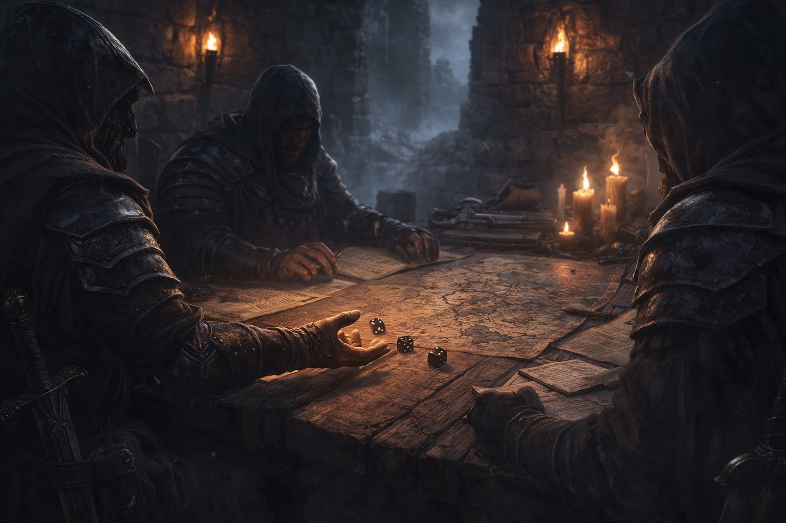
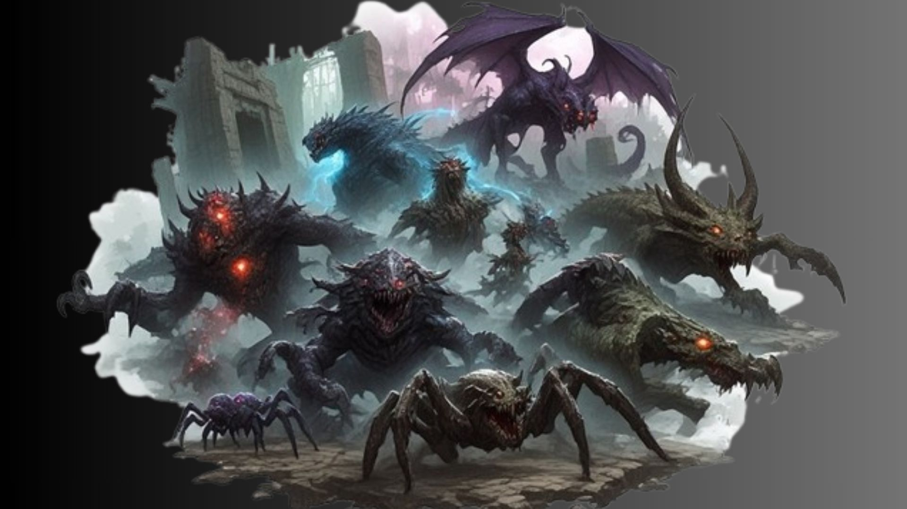
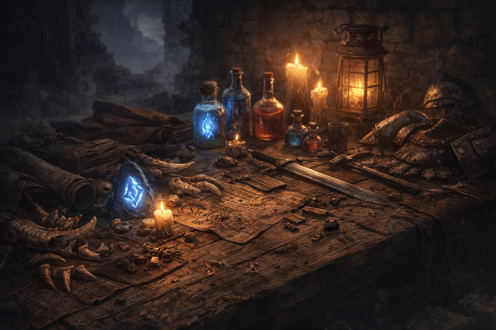
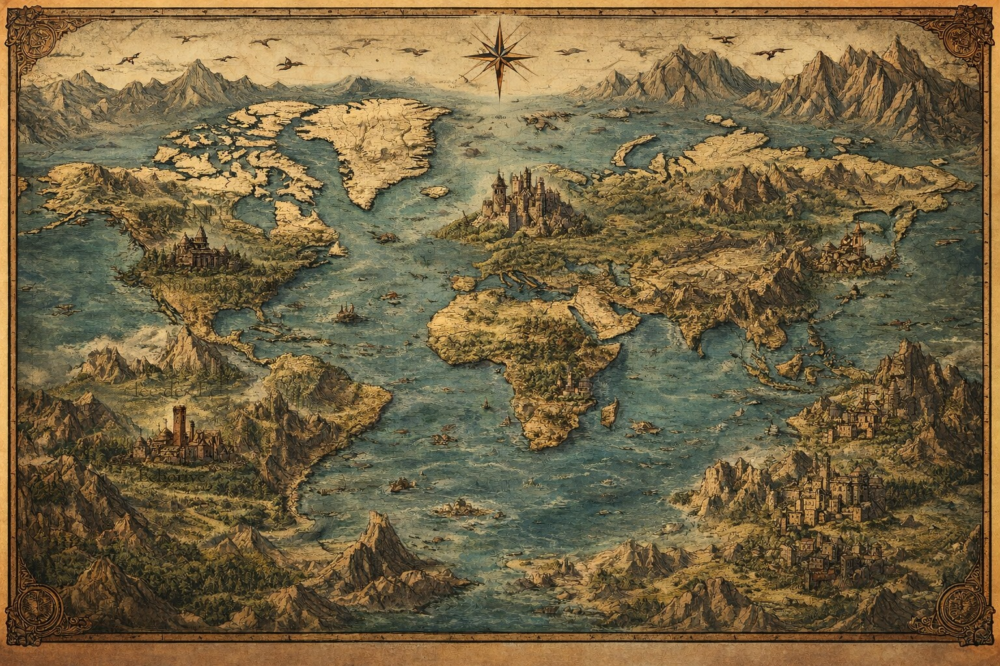
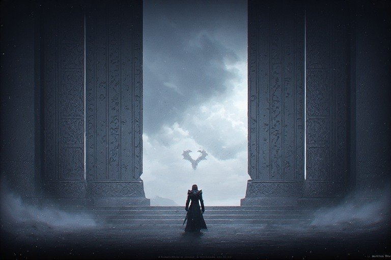

Un univers sombre et cohérent
Fragments narratifs, régions maudites, serments anciens, bastions brisés et menace de la faille : le Rivage est pensé comme un monde vivant.
Fantasy sombre • Lore • Bestiaire • Jeu de rôle
La faille s’est ouverte. Les terres ont cédé. Les Sentinelles tiennent encore.
Explorez un monde ravagé par les brumes, les créatures et les ruines anciennes. Découvrez le lore, le bestiaire, les règles du JDR et les archives officielles de L’Autre Rivage.

Fragments narratifs, régions maudites, serments anciens, bastions brisés et menace de la faille : le Rivage est pensé comme un monde vivant.

Spectres, araignées, colosses, dragons, bêtes anciennes et gardiens oubliés peuplent chaque région du Rivage.
Lancez les dés rapidement avec une interface claire, lisible et pensée pour le jeu. Jets simples, actions, résultats visibles, rythme rapide : le système doit donner envie de jouer immédiatement.

Récupérez des ressources sur les créatures, vendez-les, transformez-les ou fabriquez armes, armures, potions, runes et objets rares.

Parcourez les cartes, repérez les régions majeures et préparez vos expéditions dans les zones les plus dangereuses du Rivage.
Livres d’initiation, bestiaires, extensions, règles, scénarios et documents du monde prolongent naturellement l’expérience.
Découvrez l’ambiance du Rivage à travers une vidéo immersive entre brume, ruines, créatures et départ en mission.

Besoin d’aide ? Rejoindre la communauté • Parcourir le JDR